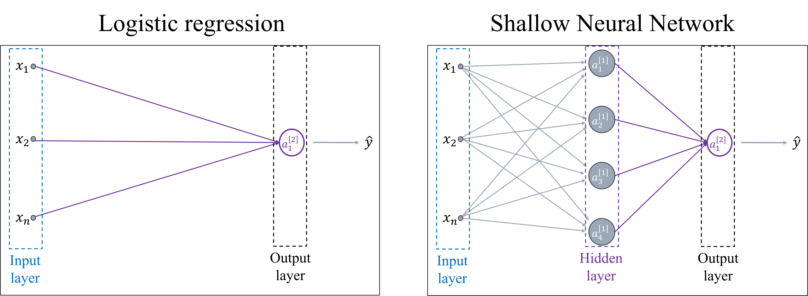
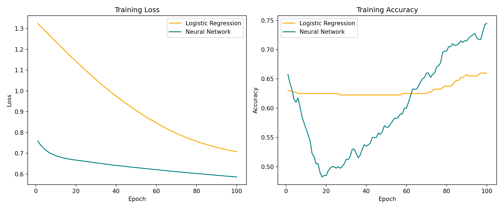
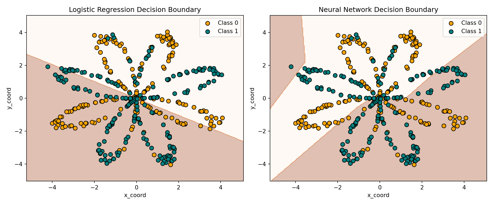

Show the code
import pandas as pd
import numpy as np
import osThis hands-on workshop introduces the essential Python skills needed for deep learning. You’ll run Python code in Google Colab.
import pandas as pd
import numpy as np
import osGet familiar with Python’s basic building blocks: variables, lists, dictionaries, control flow, and functions.
if, for, and while statementsConcept:
- Lists are ordered collections. Each item has a position called an index (starting from 0).
- You can get a single element using list[index] (e.g., scores[0] → first element).
- You can get a slice using list[start:stop], which returns elements from start up to but not including stop.
- Dictionaries store key–value pairs. You look up a value by its key (like a label).
- You can add new keys or update existing ones using dict[key] = value.
- Keys must be unique; values can be any data type.
# A list of exam scores for Alice
scores_alice = [88, 92, 79]
# Indexing: position 0 is the first score
print("First score:", scores_alice[0])First score: 88# Slicing: [:2] means start at index 0, stop before index 2 → positions 0 and 1
print("First two scores:", scores_alice[:2])First two scores: [88, 92]# A dictionary mapping student names to their list of scores
student_scores = {
"Alice": [88, 92, 79],
"Bob": [75, 83, 80],
"Carol": [90, 85, 95],
"Dave": [72, 78, 70],
}
# Lookup: use the key (student's name) to get the list of scores
print("Carol's scores:", student_scores["Carol"])Carol's scores: [90, 85, 95]# Add a new student by assigning to a new key
student_scores["Eve"] = [85, 88, 91]
# Update an existing student's scores (overwrites the old list)
student_scores["Bob"] = [78, 84, 82]
# Get all keys (student names) and values (lists of scores)
print("Students:", list(student_scores.keys()))Students: ['Alice', 'Bob', 'Carol', 'Dave', 'Eve']print("Sample scores:", list(student_scores.values())[:2]) # [:2] → first two valuesSample scores: [[88, 92, 79], [78, 84, 82]]Concept:
- if / elif / else lets the program choose actions based on conditions.
- for loops iterate over items in a collection, letting you process each element in turn.
We’ll use the student_scores dictionary from the previous section.
# Example 1: if / elif / else
x = 87
if x >= 90:
grade = "A"
elif x >= 80:
grade = "B"
else:
grade = "C or below"
print("Grade bucket:", grade)Grade bucket: B# Example 2: for loop over a student's scores
# Reusing the student_scores dictionary from earlier
scores_alice = student_scores["Alice"] # a list of Alice's scores
total = 0
for s in scores_alice:
total = total + s
average = total / len(scores_alice)
print("Alice's average score:", average)Alice's average score: 86.33333333333333Concept:
- A function is a reusable block of code that takes inputs (parameters) and can return an output.
- Use def function_name(parameters): to define it.
- Use return to send a result back to the caller.
- You can reuse loops and calculations inside a function so you don’t repeat the same code.
def average_score(scores):
"""
Calculate the average from a list of scores.
"""
total = 0
for s in scores:
total = total + s
return total / len(scores)
# Example: Calculate averages for all students
for name in student_scores: # loops over keys (student names)
avg = average_score(student_scores[name])
print(f"{name}: {avg:.2f}")Alice: 86.33
Bob: 81.33
Carol: 90.00
Dave: 73.33
Eve: 88.00Concept:
NumPy arrays are like lists but optimized for fast mathematical operations.
- 1D array → like a row of numbers.
- 2D array → like a table (rows × columns).
- .shape tells you the size of the array.
# 1D array: vector of exam scores
scores_1d = np.array([88, 92, 79])
print("1D array:", scores_1d)1D array: [88 92 79]print("Shape:", scores_1d.shape) # (3,) → 3 elements in 1 dimensionShape: (3,)# 2D array: scores for two students across three exams
scores_2d = np.array([
[88, 92, 79], # student 1
[75, 83, 80] # student 2
])
print("\n2D array:\n", scores_2d)
2D array:
[[88 92 79]
[75 83 80]]print("Shape:", scores_2d.shape) # (2, 3) → 2 rows, 3 columnsShape: (2, 3)# Now convert student_scores dictionary values into a 2D array
grades_matrix = np.array(list(student_scores.values()))
print("\nGrades matrix:\n", grades_matrix)
Grades matrix:
[[88 92 79]
[78 84 82]
[90 85 95]
[72 78 70]
[85 88 91]]print("Shape:", grades_matrix.shape) # rows = students, columns = examsShape: (5, 3)Concept:
- Indexing works like Python lists: array[row_index, col_index] (0-based).
- Slicing lets you select a range: start:stop returns elements from start up to (but not including) stop.
- You can slice rows, columns, or both.
# Example array for reference
print("Grades matrix:\n", grades_matrix)Grades matrix:
[[88 92 79]
[78 84 82]
[90 85 95]
[72 78 70]
[85 88 91]]# Get the score of the first student in the first exam
print("\nFirst student's first exam score:", grades_matrix[0, 0])
First student's first exam score: 88# Get all exam scores for the second student (row index 1)
print("Second student's scores:", grades_matrix[1, :])Second student's scores: [78 84 82]# Get all scores for the third exam (column index 2)
print("Scores in third exam:", grades_matrix[:, 2])Scores in third exam: [79 82 95 70 91]# Slice: first two students' scores
print("First two students' scores:\n", grades_matrix[0:2, :])First two students' scores:
[[88 92 79]
[78 84 82]]# Slice: first two exams for all students
print("First two exams for all students:\n", grades_matrix[:, 0:2])First two exams for all students:
[[88 92]
[78 84]
[90 85]
[72 78]
[85 88]]Concept:
- Element-wise operations apply a calculation to each element of an array.
- Broadcasting lets NumPy apply operations between arrays of different shapes by “stretching” one to match the other (without copying data).
- This is much faster and cleaner than using Python loops.
# Add 5 points to every score (element-wise addition)
print("Original:\n", grades_matrix)Original:
[[88 92 79]
[78 84 82]
[90 85 95]
[72 78 70]
[85 88 91]]print("\n+5 to every score:\n", grades_matrix + 5)
+5 to every score:
[[ 93 97 84]
[ 83 89 87]
[ 95 90 100]
[ 77 83 75]
[ 90 93 96]]# Multiply all scores by 1.1 to simulate a 10% bonus
print("\n10% bonus:\n", grades_matrix * 1.1)
10% bonus:
[[ 96.8 101.2 86.9]
[ 85.8 92.4 90.2]
[ 99. 93.5 104.5]
[ 79.2 85.8 77. ]
[ 93.5 96.8 100.1]]# Broadcasting: subtract the minimum score in each column (exam) from that column
min_scores_per_exam = grades_matrix.min(axis=0) # shape: (n_exams,)
print("\nMinimum scores per exam:", min_scores_per_exam)
Minimum scores per exam: [72 78 70]adjusted = grades_matrix - min_scores_per_exam # broadcasting happens here
print("\nScores adjusted by exam minimum:\n", adjusted)
Scores adjusted by exam minimum:
[[16 14 9]
[ 6 6 12]
[18 7 25]
[ 0 0 0]
[13 10 21]]Concept:
- Matrix multiplication (np.dot) combines rows and columns, often used in deep learning layers to combine inputs with weights.
- Axis-based operations let you apply functions (mean, sum, etc.) across rows or columns:
axis=0 → operate down columns (across rows)
axis=1 → operate across columns (per row)
Extra notes: - np.ones(shape) creates an array of ones with the given shape.
- Here we use it for equal weights when averaging scores: each exam gets the same weight.
- .flatten() converts a multi-dimensional array into a 1D array.
- After matrix multiplication, the result might be shape (n_students, 1); flattening makes it easier to print and work with.

# Example: equal-weight average across exams (axis=1 → per student)
avg_scores_axis = grades_matrix.mean(axis=1)
print("Average score per student (axis=1):", [f"{x:.2f}" for x in avg_scores_axis])Average score per student (axis=1): ['86.33', '81.33', '90.00', '73.33', '88.00']# Example: average score per exam (axis=0 → per exam)
avg_scores_exam = grades_matrix.mean(axis=0)
print("Average score per exam (axis=0):", [f"{x:.2f}" for x in avg_scores_exam])Average score per exam (axis=0): ['82.60', '85.40', '83.40']# Using matrix multiplication to compute averages
n_exams = grades_matrix.shape[1]
weights = np.ones((n_exams, 1)) / n_exams # shape: (n_exams, 1)
averages_via_dot = np.dot(grades_matrix, weights).flatten()
print("\nAverages via matrix multiplication:",
[f"{x:.2f}" for x in averages_via_dot])
Averages via matrix multiplication: ['86.33', '81.33', '90.00', '73.33', '88.00']# Weighted sum example: suppose exams have weights 0.5, 0.3, 0.2
exam_weights = np.array([0.5, 0.3, 0.2]).reshape(-1, 1) # shape: (n_exams, 1)
weighted_scores = np.dot(grades_matrix, exam_weights).flatten()
print("\nWeighted average per student:",
[f"{x:.2f}" for x in weighted_scores])
Weighted average per student: ['87.40', '80.60', '89.50', '73.40', '87.10']Concept:
- A NumPy array is efficient for numerical operations but has no column or row labels — you must remember indexes yourself.
- A pandas DataFrame wraps a NumPy array with labels (row and column names), allowing:
df["Math"]) instead of position..head(), .info(), .describe()).Key point: Deep learning libraries often use NumPy arrays internally, but pandas is more convenient for data cleaning and exploration.
# Our NumPy grades_matrix (from Section 3)
print("NumPy array:\n", grades_matrix)NumPy array:
[[88 92 79]
[78 84 82]
[90 85 95]
[72 78 70]
[85 88 91]]print("Shape:", grades_matrix.shape)Shape: (5, 3)# Convert to DataFrame with labels
exam_names = ["Exam 1", "Exam 2", "Exam 3"]
student_names = list(student_scores.keys())
grades_df = pd.DataFrame(grades_matrix, index=student_names, columns=exam_names)
print("\nDataFrame:\n", grades_df)
DataFrame:
Exam 1 Exam 2 Exam 3
Alice 88 92 79
Bob 78 84 82
Carol 90 85 95
Dave 72 78 70
Eve 85 88 91# Accessing data
print("\nScore of Carol in Exam 2 (by labels):", grades_df.loc["Carol", "Exam 2"])
Score of Carol in Exam 2 (by labels): 85print("Score of Carol in Exam 2 (by position):", grades_matrix[2, 1])Score of Carol in Exam 2 (by position): 85# Quick stats for each exam
print("\nExam averages:\n", grades_df.mean().round(2))
Exam averages:
Exam 1 82.6
Exam 2 85.4
Exam 3 83.4
dtype: float64Concept:
In real projects, we often load datasets from CSV or Excel files.
Pandas DataFrames are perfect for this stage because they:
X) and target labels (y) for model training.We’ll load a planar dataset with two numeric features (x_coord, y_coord) and a binary label (label).
# Load into DataFrame
raw_df = pd.read_csv(data_path_here)
# Inspect
print("Shape:", raw_df.shape)Shape: (400, 3)print("\nFirst 5 rows:\n", raw_df.head())
First 5 rows:
x_coord y_coord label
0 1.204442 3.576114 0
1 0.158710 -1.482171 0
2 0.095247 -1.279955 0
3 0.349178 -2.064380 0
4 0.694150 2.889109 0# Separate features and target
features = ["x_coord", "y_coord"]
target = "label"
X = raw_df[features].copy()
y = raw_df[target].copy()
print("\nFeatures sample:\n", X.head())
Features sample:
x_coord y_coord
0 1.204442 3.576114
1 0.158710 -1.482171
2 0.095247 -1.279955
3 0.349178 -2.064380
4 0.694150 2.889109print("\nLabels sample:\n", y.head())
Labels sample:
0 0
1 0
2 0
3 0
4 0
Name: label, dtype: int64Concept:
A scatter plot lets us see how the two features (x_coord, y_coord) relate to the class label.
If classes are not linearly separable, a simple logistic regression will likely underperform compared to a neural network.
import matplotlib.pyplot as plt
plt.figure(figsize=(6, 5))
# Bright, high-contrast colors
colors = {0: "orange", 1: "teal"}
# Scatter plot
for label_value in sorted(y.unique()):
subset = X[y == label_value]
plt.scatter(
subset["x_coord"], subset["y_coord"],
c=colors[label_value],
edgecolor="k",
s=50,
label=f"Class {label_value}"
)
plt.xlabel("x_coord")
plt.ylabel("y_coord")
plt.title("Planar Dataset by Label")
plt.legend(title="Label")
plt.show()
Concept:
We’ll train two models on the planar dataset:

This comparison shows why neural networks can outperform linear models on complex patterns.
from tensorflow.keras.models import Sequential
from tensorflow.keras.layers import Dense
from tensorflow.keras.optimizers import Adam
# Logistic Regression model: single Dense layer
log_reg_model = Sequential([
Dense(1, activation='sigmoid', input_shape=(2,))
])
log_reg_model.compile(optimizer=Adam(),
loss='binary_crossentropy',
metrics=['accuracy'])
log_reg_history = log_reg_model.fit(X, y, epochs=100, batch_size=32, verbose=0)
log_acc = log_reg_model.evaluate(X, y, verbose=0)[1]
print(f"Logistic Regression Accuracy: {log_acc:.2f} \n ")Logistic Regression Accuracy: 0.49
# Neural Network model: one hidden layer
nn_model = Sequential([
Dense(10, activation='relu', input_shape=(2,)),
Dense(1, activation='sigmoid')
])
nn_model.compile(optimizer=Adam(),
loss='binary_crossentropy',
metrics=['accuracy'])
nn_history = nn_model.fit(X, y, epochs=100, batch_size=32, verbose=0)
nn_acc = nn_model.evaluate(X, y, verbose=0)[1]
print(f"Neural Network Accuracy: {nn_acc:.2f}")Neural Network Accuracy: 0.76import matplotlib.pyplot as plt
# Extract loss values
log_loss = log_reg_history.history['loss']
nn_loss = nn_history.history['loss']
# Extract accuracy values
log_acc_hist = log_reg_history.history['accuracy']
nn_acc_hist = nn_history.history['accuracy']
epochs_range = range(1, len(log_loss) + 1)
plt.figure(figsize=(12, 5))
# Loss plot
plt.subplot(1, 2, 1)
plt.plot(epochs_range, log_loss, label='Logistic Regression', color='orange')
plt.plot(epochs_range, nn_loss, label='Neural Network', color='teal')
plt.xlabel('Epoch')
plt.ylabel('Loss')
plt.title('Training Loss')
plt.legend()
# Accuracy plot
plt.subplot(1, 2, 2)
plt.plot(epochs_range, log_acc_hist, label='Logistic Regression', color='orange')
plt.plot(epochs_range, nn_acc_hist, label='Neural Network', color='teal')
plt.xlabel('Epoch')
plt.ylabel('Accuracy')
plt.title('Training Accuracy')
plt.legend()
plt.tight_layout()
plt.show()
To better understand how each model separates the two classes, we will define an auxiliary plotting function called plot_decision_boundary.
This function will: 1. Create a grid over the feature space. 2. Use the model to predict the class for each point in the grid. 3. Display the predicted regions as a colored background. 4. Overlay the actual data points on top.
After defining this function, we will call it for both the logistic regression and neural network models to visually compare their decision boundaries.
import numpy as np
import matplotlib.pyplot as plt
def plot_decision_boundary(model, X, y, title):
# Create a mesh grid over the feature space
x_min, x_max = X["x_coord"].min() - 1, X["x_coord"].max() + 1
y_min, y_max = X["y_coord"].min() - 1, X["y_coord"].max() + 1
xx, yy = np.meshgrid(
np.linspace(x_min, x_max, 300),
np.linspace(y_min, y_max, 300)
)
# Predict over the grid
grid_points = np.c_[xx.ravel(), yy.ravel()]
Z = model.predict(grid_points, verbose=0)
Z = (Z > 0.5).astype(int).reshape(xx.shape)
# Plot contour and points
plt.contourf(xx, yy, Z, cmap=plt.cm.Oranges, alpha=0.3)
colors = {0: "orange", 1: "teal"}
for label_value in sorted(y.unique()):
subset = X[y == label_value]
plt.scatter(
subset["x_coord"], subset["y_coord"],
c=colors[label_value],
edgecolor="k",
s=50,
label=f"Class {label_value}"
)
plt.xlabel("x_coord")
plt.ylabel("y_coord")
plt.title(title)
plt.legend()# Plot for both models side by side
plt.figure(figsize=(12, 5))
plt.subplot(1, 2, 1)
plot_decision_boundary(log_reg_model, X, y, "Logistic Regression Decision Boundary")
plt.subplot(1, 2, 2)
plot_decision_boundary(nn_model, X, y, "Neural Network Decision Boundary")
plt.tight_layout()
plt.show()